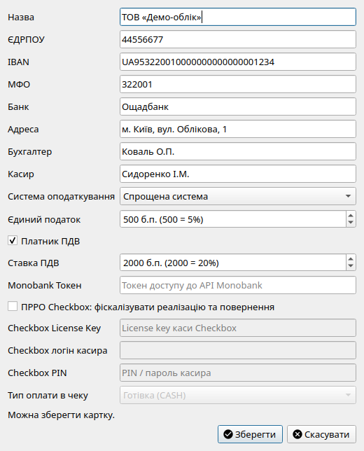

У діалозі Облік → Картка підприємства налаштовуються всі реєстраційні реквізити вашої організації, банківські рахунки, посадові особи для друкованих форм, а також параметри системи оподаткування.

Діалог налаштування реквізитів підприємства, посадових осіб та податкового статусу.| Реквізит | Вимоги та формат | Де використовується |
|---|---|---|
| Назва підприємства | Офіційне найменування юридичної особи або ПІБ ФОП (за замовчуванням: «Підприємство»). | Шапка всіх первинних документів, звітів, актів та декларацій. |
| Код ЄДРПОУ / РНОКПП | 8 цифр для юрособи або 10 цифр для фізичної особи-підприємця. | Печатні форми, платіжні інструкції, податкові накладні, зіставлення банківських виписок. |
| Коди ДПІ | Регіон (C_REG), район (C_RAJ) і код ДПІ (C_STI_ORIG) з довідника ДПС. Обов'язкові для експорту XML декларацій. | Заголовок DECLAR усіх XML для Кабінету ДПС / M.E.Doc. |
| Номер рахунку IBAN |
Міжнародний номер рахунку українського стандарту (рівно 29 символів,
починається з UA).
|
Рахунки на оплату, платіжні інструкції, договори, акти звірки. |
| Код банку (МФО) | Рівно 6 цифр. Важливо: значення МФО має точно збігатися із символами на позиціях 5–10 вашого номера IBAN. | Платіжні інструкції НБУ №163 та банківські реєстри. |
| Назва банку | Повна або скорочена назва обслуговуючого банку. | Друковані форми рахунків та платіжних доручень. |
| Адреса | Офіційна податкова адреса підприємства. | Акти, видаткові накладні, податкові накладні. |
Для коректного автоматичного заповнення типових форм вкажіть відповідальних осіб:
У блоці податкових параметрів ви налаштовуєте податковий режим:
Для фіскалізації реалізації та повернення увімкніть «ПРРО Checkbox» і вкажіть License Key, логін і PIN касира. Детальніше: ПРРО (Checkbox).